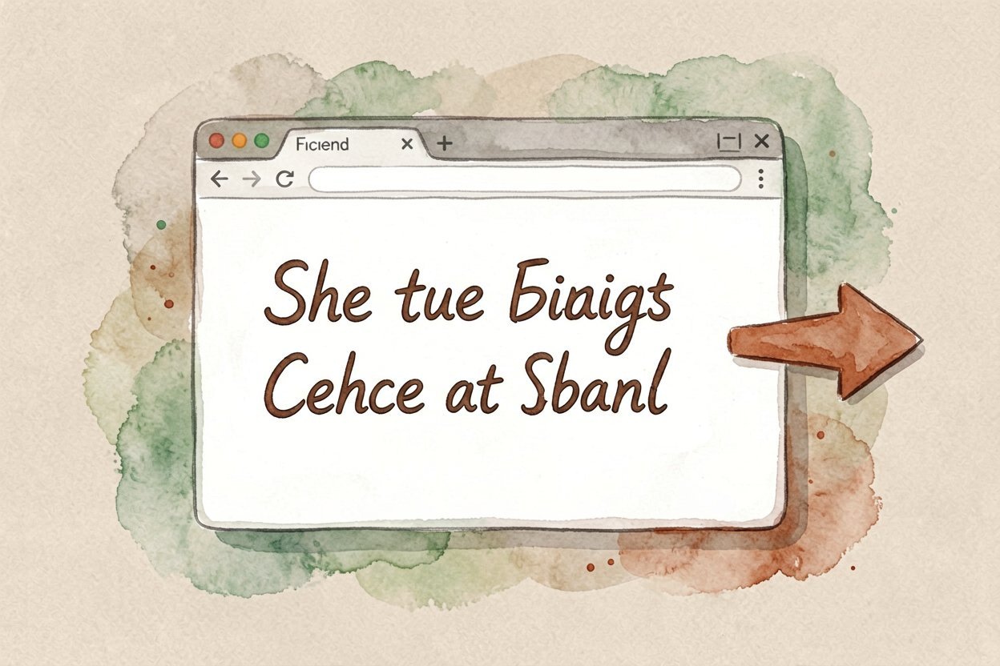
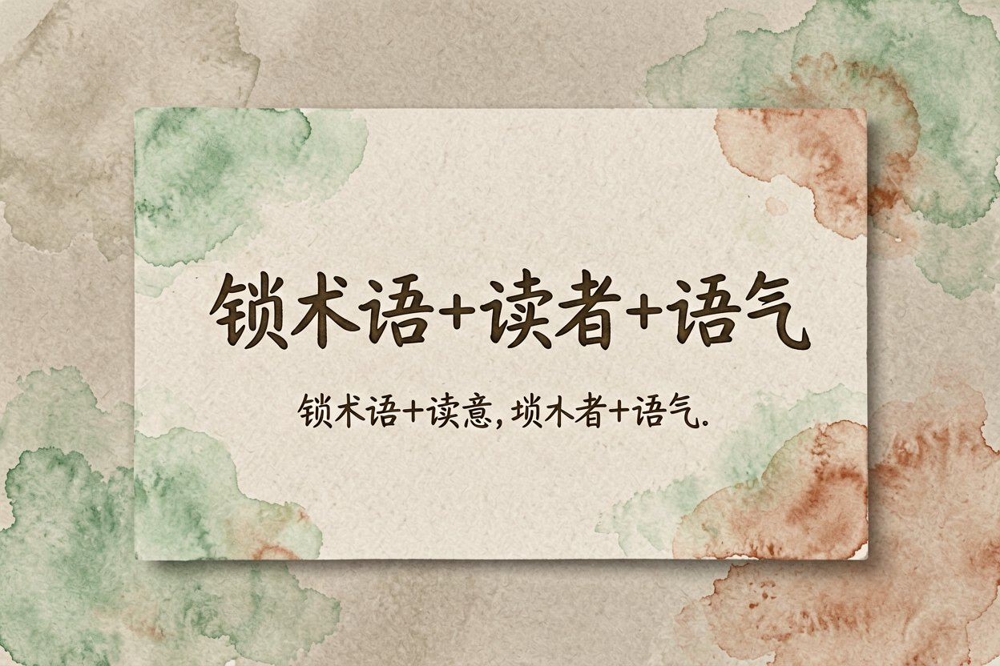
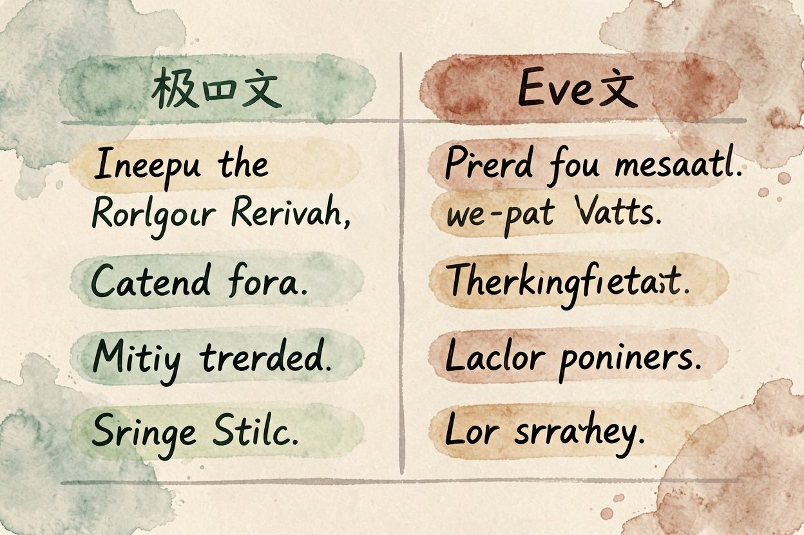

AI 翻译怎么用：网页文档精准翻译完整实操教程
查单词不够用、机翻生硬？用 AI 翻译，把整段语境喂进去，出来的句子比词典顺得多，还懂上下文。
AI 翻译是本文的核心主题，下面详细介绍如何使用。
AI 翻译是什么：比词典更懂上下文

AI 翻译，是用大模型把整段文字连同语境一起翻，而不是逐词查表。它懂前后文，知道同一个词在不同句子里该翻成什么，长句也不容易散。和AI 内容创作指南用的是同一类能力，只是目标从「写」变成「转」。
传统机翻常把句子翻得像拼凑，AI 翻译会先理解再表达。日常网页、文档、聊天记录，它都比老式工具顺手。它还能按你的要求调语气，正式还是口语一句话就改，这是词典做不到的。同一段文反复润也能越翻越贴，先出骨架再调语气最稳。
日常网页和文档怎么翻

浏览器装个沉浸式翻译或类似插件，外语网页鼠标悬停就出双语，读文献省钱省事。文档翻译用豆包、Gemini 这类，整篇上传直接出中文，比一段段贴快。插件还能锁域名，只翻译正文不翻导航。
长文档先让它出摘要，确认方向对了再精翻重点段。别一上来就全文翻，省 token 也更准。遇到表格和代码块，先单独处理，模型翻表格偶尔会错位，代码注释能不改就不改。
用聊天模型做精翻

遇到术语多、语气讲究的段落，直接开聊天模型，把要求和原文一起给。限定术语原名和读者类型，结果更可控。先列术语表再翻，专业内容不容易跑偏：
翻译提示词示例：
把下面英文译成中文，保留术语原名，
语气正式，面向技术读者，不增删原意：
{粘贴原文}让模型先标出它不确定的词，你再核原文。和AI 视频翻译思路一致，先把语境喂足。同一段用两个模型各翻一遍，差异处重点查，质量更稳。
补充：AI 翻译的详细用法可参考上文步骤。
补充：AI 翻译的详细用法可参考上文步骤。
补充：AI 翻译的详细用法可参考上文步骤。
专业内容怎么不翻车
法律、医疗、合同类最怕错译。先让模型标出它不确定的词，你再核原文。数字、日期、专有名词逐条对，模型偶尔会改写法，比如把约数翻成定值。重要文件别全信机器，人工过一遍才发。专有名词先建对照表，翻完按表逐条扫一遍防漏。
同一份稿子用两个模型各翻一遍，差异处重点查。和NotebookLM 评测配合，把原文喂进知识库再问答，术语更稳。长合同先按条款切片，逐条翻逐条核对，比整篇翻更可控。
避坑与保密提醒
第一个坑是盲信全文，长文必有小错，关键句必查。第二个坑是泄露机密，合同客户资料别乱传公共模型，敏感内容走本地或企业版。第三个坑是丢术语，先锁词表再翻，别让模型自由发挥换词。还有一个是漏语境，长句截太碎会翻偏，尽量整段喂。
别把敏感数据塞进不知名翻译工具。AI 翻译是提速杠杆不是终审，重要结论仍以原文和人工核实为准。翻译完读一遍中文是否通顺，机翻腔重的句子手动润色。别图快就跳过核对，错一句可能误大事。
AI 翻译的最佳实践见上文详细步骤，别错过核心要点。 !尾图翻译要点
{kind=link}
本文信息核对于 2026-08-24。AI 产品的价格、免费额度与功能变动频繁，实际以各工具官网当前说明为准。